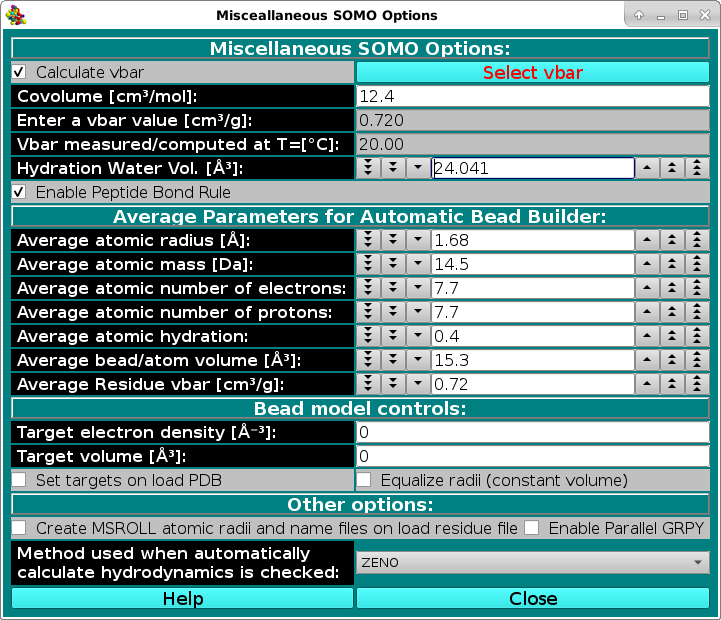

|
Manual
|
SOMO - Miscellaneous Options Module:
Last updated: June 2024

In this module, you can set some options affecting both the model building and the hydrodynamic computations stages. The Calculate vbar checkbox allows the computation of the partial specific volume (vbar) [cm3/g] in standard
conditions (water @ 20°C) of the structure from its composition, using the residues' values stored in the residue table (default: active).
The Covolume [cm3/mol]: field controls the addition of a covolume term (see Durchschlag and Zipper, Progr. Colloid. Polym. Sci. 94:20-39, 1994) to the calculation of the molar volume of an entire PDB structure, independently of how many chains it is composed from. Since this term was first added in the calculation of relatively small molecules (e.g., amino acids), and, as stated in the Durchschlag and Zipper paper quoted above "In the case of polymers the contribution of Vcv has to be neglected if the volume of the monomeric unit is to be calculated", we chose to add it just once per protein structure, although this is a matter of debate. (default: 12.4 cm3/mol)
Alternatively, a vbar value (vbar(ent), either computed by other means or measured) can be entered in the Enter a vbar value [cm3/g] field. For instance, if a significant number of non-coded or incomplete residues are skipped when parsing the PDB file, the computed vbar could be not correct; likewise, if the Automatic Bead Builder is used for non-coded residues, the vbar could also be incorrect. In these cases, entering an experimental value will be the best option. Importantly, the temperature T(ent) at which the entered vbar(ent) has been measured/computed must be entered in the Vbar measured/computed at T=[°C]: field. The vbar(ent) and T(ent) values will be then used by the Hydrodynamic Computation Options module to calculate an operational vbar valid for the temperature conditions to which the hydrodynamic computations are referred. If a vbar value is entered in this field (and the Calculate vbar checkbox is deselected), a message will be displayed in the progress window ("ATTENTION: vbar = ") when the model is being built. This should avoid the use of incorrect external vbar
values resulting by inadvertently leaving the Calculate vbar checkbox deselected from a previous model-generating session.
The Select vbar button will instead load a vbar value calculated from protein sequence by using the UltraScan vbar calculation routine. WARNING: whenever possible, use experimental vbar values, as many factors can affect its computation!!!! The routines provided here should be considered just as a best approximation in absence of experimental data.
The Hydration Water Vol. [Å3] field sets the volume of the water of hydration molecules, which has been found (Gerstein and Chothia, Proc. Natl. Acad. Sci. USA 93:10167-10172, 1996) to be on average 24.5 Å3,
different from that of either bulk (29.7 Å3) or isolated (11.5 Å3) water molecules (default: 24.041 Å3).
The Enable Peptide Bond Rule checkbox controls if the peptide bond rule is used by the SoMo method. With this rule, the peptide bond segment is used for the main chain beads of a protein structure. These beads are thus positioned at the center of gravity (c.o.g.) of the (CA-C-O)n-(N)(n+1) atoms, except when PRO is the (n+1) residue. In this case, the peptide bond bead is positioned at the c.o.g. of the (CA-C-O)n atoms. Additional rules control the generation of the OXT bead and of the first N atom at the beginning of each protein chain. All these rules are controlled by "special" residues in the somo.residue table. To gain total control over the positioning, volumes and masses of every bead, the Enable Peptide Bond Rule checkbox should be deselected. In this case, the descriptions present in the somo.residue table are fully effective. (default: selected).
The Average Parameters for Automatic Bead Builder: submenu contains a series of fields governing the average parameters that will be used by the Automatic Bead Builder routine when this option is selected (see
here) for non-coded residues.
-
Average atomic radius [Å]: this is the radius used by the ASA routines (see here) to compute the accessible surface area of the non-coded residue. The default value (1.68 Å) was derived by averaging the atomic radii of the C,O,P,N,S elements present in the January 2023 version of the default somo.atom table. Averaging over all elements produced a slightly lower value, 1.63 Å.
-
Average atomic mass (Da): this is an average atomic mass for atoms within non-coded residues used in the computation of the total mass of the model. The default value (14.5 Da) was derived by averaging the atomic masses of the C,O,P,N,S elements present in the the January 2023 version of the default somo.atom table (with implicit hydrogens counted). Including all elements produced a slightly larger value, 16.4 Da. In any case, we strongly suggest to enter a global value in the Total Mass of Model field in the SOMO Hydrodynamic Calculation Options panel when dealing with structures containing non-coded residues.
-
Average atomic number of electrons: used for computing the isoelectric point and net charge as a function of pH, and in the P(r) vs. r computations in the SAXS-framework. As for the two entries above, this average (7.7) was derived from the C,O,P,N,S elements present in the the January 2023 version of the default somo.atom table. This includes the charged and not-charged species for ionizable groups (e.g., -OH and -O-). Counting all elements produced an 8.5 value.
-
Average atomic number of protons: used for computing the isoelectric point and net charge as a function of pH. As above, this average (7.7) was derived from the C,O,P,N,S elements present in the the January 2023 version of the default somo.atom table. This included the charged and not-charged species for ionizable groups (e.g., -NH2 and -NH3+). Counting all elements produced an 8.5 value.
-
Average atomic hydration: this value will be multiplied by the number of atoms present in the non-coded residue to determine an hydration number (which will be rounded to the closest integer). The volume calculated from this hydration number multiplied by the hydration water volume (see above) will be added to the anhydrous bead volume (see below) to determine the final volume of the bead. The default value (0.4) is a compromise between the value derived for amino acids and carbohydrates (0.3) and that for nucleotides/nucleosides and prosthetic groups, 0.5. These number were calculated by averaging the hydration number of a bead divided by the number of atoms assigned to it for the beads defined in the original (April 2009) version of the default somo.residue table. This value should perhaps be adapted to the kind of non-coded residue(s) being roughly modeled by the Automatic Bead Builder.
-
Average bead/atom volume [Å3]: this value will be multiplied by the number of atoms present in the non-coded residue to determine the anhydrous volume of the bead that will represent them, to which the volume of the water of hydration will be then added (see above). The default value (15.3 Å3) was derived by averaging the bead volume divided by the number of atoms assigned to it for each bead present in the original (April 2009) version of the default somo.residue table. Volumes by categories are: 17.8 Å3 for amino acids, 15.3 Å3 for carbohdrates, 14.7 Å3 for nucleotides/nucleosides, and 11.8 Å3 for prosthetic groups.
-
Average Residue vbar [cm3/g]: this value will be used in the computation of the global vbar of the model. The default value (0.72 cm3/g) is that of the average protein. It could be changed when dealing with other kind of biomacromolecules. In any case, we strongly suggest to enter a global (better if experimental) value for vbar in the Enter vbar: field above when dealing with structures containing non-coded residues.
The Bead model controls are user-defined parameters that were introduced in April 2012 and still need further testing, used when loading a bead model for SAXS computations.
-
Target electron density [Å-3]:
Set this value to the electron density of the structure.
-
Target volume [Å3]:
Set this value to the volume of the structure.
-
Set targets on load PDB:
When set, loading a PDB will change the radii of the beads to match the target electron density and
target volume defined above.
-
Equalize radii (constant volume):
When set, all beads will be forced to have the same radius value.
Other Options:
-
In May 2014 we added a new method for the computation of the hydrodynamic parameters starting from an atomic-level structure, the boundary elements approach BEST [S.R. Aragon, A precise boundary element method for macromolecular transport properties. J. Comp.Chem., 25, 1191-1205 (2004); S.R. Aragon and D.K. Hahn, Precise boundary element computation of proteins transport properties: Diffusion tensors, specific volume and hydration, Biophysical Journal, 91:1591-1603 (2006)]. This method necessitates a properly formatted atomic radii and names file for its ancillary program MSROLL, and the one provided with the original BEST program is directly made available within the US-SOMO implementation ("best.radii"). Users wishing to utilize instead the atomic radii and names as listed in the US-SOMO somo.residue file can generate a properly formatted file compatible with BEST by selecting the Create MSROLL atomic radii and names file on load residue file checkbox here, and re-launch US-SOMO.
-
In 2018, we added the GRPY very accurate but computationally-intensive method for calculating the hydrodynamic properties of models with overlapping beads of different size (see History in the Main US-SOMO Help). A non-parallel GRPY code was made available at that time, severely limiting speed and size of the models that could be processed. A full implementation allowing multi-core parallel processing is now available for all operating systems from the July 2024 release. Select the Enable Parallel GRPY checkbox to use this option (default: not selected).
-
Method used when automatically calculate hydrodynamics is checked in the Hydrodynamic Calculations section of the US-SOMO main section. A pull down menu will let you choose between three options:
SMI or ZENO if overlaps present (legacy)
ZENO
GRPY
ZENO is the Default option because it allows computing the hydrodynamic parameters of bead models irrespective of their size and of the presence/absence of overlaps. The use of SMI is discouraged, and GRPY can be unable to run (crash) depending on the user's computer characteristics and size (number of used beads) of the model.
www contact: Emre Brookes
This document is part of the UltraScan Software Documentation
distribution.
Copyright © notice.
The latest version of this document can always be found at:
http://somo.aucsolutions.com
Last modified on June 13, 2024.
{kind=link}